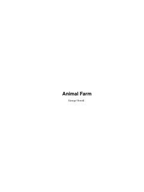

AFFermadagi hayvonlarning ozodlik uchun kurashi va hokimiyatning korrupsiyalashuvi haqidagi o'tkir siyosiy allegoriya.
Ushbu asar fermadagi hayvonlarning odamlar zulmiga qarshi isyon ko'tarishi va o'z jamiyatini qurishga urinishi haqidagi mashhur siyosiy allegoriyadir. Kitob hokimiyatning suiiste'mol qilinishi va totalitar tuzumning shakllanish jarayonini hayvonlar dunyosi misolida keskin tanqid qiladi.